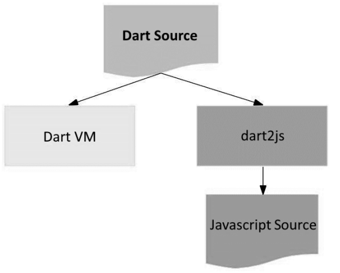
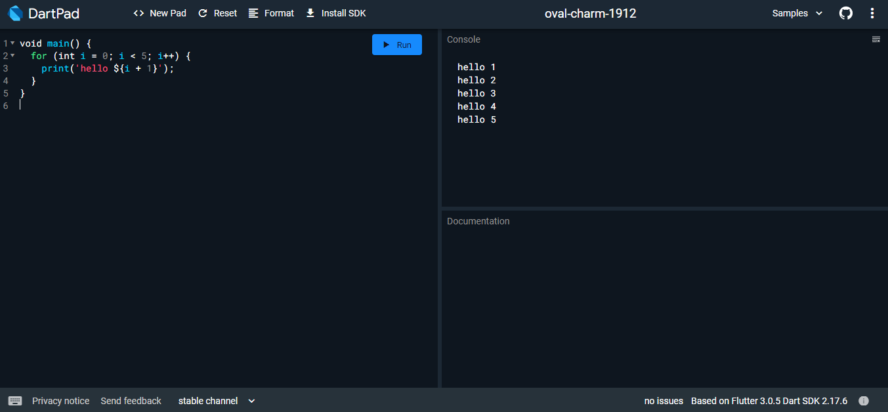
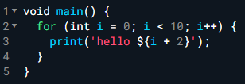
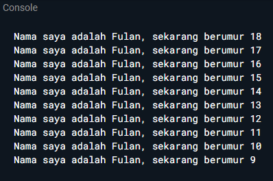

Terakhir diperbarui: 01 September 2025
Penulis: Habibie Ed Dien
Bahasa Dart adalah inti dari framework Flutter. Kerangka kerja modern seperti Flutter membutuhkan bahasa modern tingkat tinggi agar bisa memberikan pengalaman terbaik kepada pengembang, serta memungkinkan untuk membuat aplikasi seluler yang luar biasa. Memahami Dart adalah dasar untuk bekerja dengan Flutter; pengembang perlu mengetahui asal-usul bahasa Dart, bagaimana komunitas mengerjakannya, kelebihannya, dan mengapa itu adalah bahasa pemrograman yang dipilih untuk Flutter.
Dalam codelab ini, Anda akan meninjau dasar-dasar bahasa Dart dan mengidentifikasi sumber daya yang dapat membantu Anda dalam perjalanan Flutter Anda. Anda akan mempelajari tipe data dan operator bawaan Dart serta bagaimana Dart bekerja dengan pemrograman berorientasi objek (OOP). Dengan memahami bahasa Dart, Anda akan merasa nyaman untuk bereksperimen dengan Dart dan dapat memperluas pengetahuan Anda.
Di codelab ini Anda akan mempelajari tentang:
Dart bertujuan untuk menggabungkan kelebihan-kelebihan dari sebagian besar bahasa tingkat tinggi dengan fitur-fitur bahasa pemrograman terkini, antara lain sebagai berikut:
Semua pengembangan framework Flutter melibatkan pengetahuan/fitur mendalam dengan bahasa Dart; Kode aplikasi, kode plugin, dan manajemen dependensi semuanya menggunakan bahasa Dart beserta fitur-fiturnya. Memiliki pemahaman dasar yang kuat tentang Dart akan memudahkan Anda untuk menjadi lebih produktif dengan Flutter dan akan membuat Anda merasa nyaman dalam pengembangan Flutter. Ayo kita pelajari bahasa Dart lebih rinci, dimulai dari mana Dart berasal.
Diluncurkan pada tahun 2011, Dart telah berkembang sejak saat itu. Dart merilis versi stabilnya pada tahun 2013, dengan perubahan besar termasuk dalam rilis Dart 2.0 menjelang akhir 2018, yang dapat diuraikan sebagai berikut:
Dart adalah bahasa modern yang luar biasa, mendukung lintas platform, dan memiliki tujuan umum dengan terus meningkatkan fitur-fiturnya, membuatnya lebih kekinian dan fleksibel. Itulah sebabnya tim Flutter framework memilih bahasa Dart untuk digunakan.
Untuk memahami dari mana fleksibilitas bahasa dart itu berasal, kita perlu tahu bagaimana cara mengeksekusi kode Dart. Ini dapat dilakukan dengan dua cara, seperti yang dijelaskan berikut ini:
Perhatikan gambar diagram berikut:

Seperti yang Anda lihat, pada bagian atas diagram adalah kode Dart Anda. Perlu dicatat bahwa kode dan dependensi Anda bisa jadi tidak sesuai dengan cara Anda mengeksekusikan aplikasi; namun tidak perlu melakukan banyak perubahan pada kode Anda untuk dapat mendukung cross-platform.
Kode Dart dapat dieksekusi pada lingkungan yang mendukung bahasa Dart. Lingkungan yang mendukung bahasa Dart perlu memperhatikan fitur-fitur penting seperti berikut:
Eksekusi kode Dart dapat beroperasi dalam dua mode — kompilasi Just-In-Time (JIT) atau Kompilasi Ahead-Of-Time (AOT). Dijelaskan secara lebih rinci sebagai berikut:
Sebelum kita menggunakan bahasa pemrograman Dart, sebaiknya kita pahami terlebih dahulu hal-hal mendasar terkait bahasa Dart.
Jika Anda sudah mengetahui beberapa bahasa pemrograman seperti bahasa C atau memiliki beberapa pengalaman dengan JavaScript, sebagian besar sintaks Dart akan lebih mudah bagi Anda untuk memahaminya. Dart menyediakan sebagian besar operator standar untuk memanipulasi variabel; built-in types adalah yang paling umum ditemukan dalam bahasa pemrograman tingkat tinggi. Control flow dan function sangat mirip dengan bahasa pemrograman lainnya.
Seperti kebanyakan bahasa modern, Dart dirancang untuk object-oriented (OO). Secara singkat, Bahasa OOP didasarkan pada konsep objek yang menyimpan kedua data (disebut fields) dan kode (disebut methods). Objek-objek ini dibuat dari cetak biru yang disebut class yang mendefinisikan field dan method yang akan dimiliki oleh sebuah objek.
Sesuai prinsip OO memastikan bahwa Dart memiliki fitur encapsulation, inheritance, composition, abstraction, dan polymorphism. Kita akan mempelajari kelas Dart lebih banyak lagi di pertemuan dengan topik Class Dart dan Construct, namun sudah cukup jika Anda telah belajar konsep OO dalam bahasa lain seperti Java, maka sebagian besar desain OO pada Dart akan sangat mirip.
Di Dart, operator tidak lebih dari method yang didefinisikan dalam class dengan sintaks khusus.
Jadi, ketika Anda menggunakan operator seperti x == y, seolah-olah Anda sedang memanggil
x.==(y) metode untuk melakukan perbandingan kesetaraan.
Seperti yang mungkin telah Anda catat, kita menggunakan method pada x. Untuk semua tipe data, tidak seperti bahasa Java yang memiliki data primitif, x selalu berupa turunan dari kelas yang memiliki method. Ini berarti bahwa operator dapat diganti sesuai logika yang Anda inginkan.
Dart hadir dengan banyak operator typical yang bekerja seperti banyak bahasa pemrograman lainnya; yaitu sebagai berikut:
+ untuk tambahan.- untuk pengurangan.* untuk perkalian./ untuk pembagian.~/ untuk pembagian bilangan bulat. Di Dart, setiap pembagian sederhana dengan / menghasilkan nilai double. Untuk mendapatkan nilai bilangan bulat, Anda perlu membuat semacam transformasi (yaitu, typecast) dalam bahasa pemrograman lain; namun Dart sudah mendukung untuk operasi ini.% untuk operasi modulus (sisa bagi dari bilangan bulat).-expression untuk negasi (yang membalikkan suatu nilai).Beberapa operator memiliki perilaku yang berbeda tergantung pada jenis operan di sisi kiri; Misalnya, operator + dapat digunakan untuk menjumlahkan variabel dari tipe num, tetapi juga dapat digunakan untuk menggabungkan string. Karena method yang dirujuk diimplementasikan secara berbeda pada kelas yang berbeda.
Dart juga menyediakan shortcut operator untuk menggabungkan variabel setelah operasi lainnya. Operator aritmatika atau shortcut operator adalah +=, -=, *=, /=, dan ~/=.
Operator penambahan dan pengurangan juga merupakan operator umum dan diimplementasikan pada angka, sebagai berikut:
++var atau var++ untuk menambah nilai variabel var sebesar 1--var atau var-- untuk mengurangi nilai variabel var sebesar 1Operator Dart increment dan decrement berperilaku mirip dengan bahasa lain. Penerapan operator increment dan decrement sangat baik untuk operasi perhitungan pada perulangan.
Persamaan operator Dart dijelaskan sebagai berikut:
== untuk memeriksa apakah operan sama!= untuk memeriksa apakah operan berbedaUntuk melakukan pengujian relasional, maka gunakan operator sebagai berikut:
> memeriksa apakah operan kiri lebih besar dari operan kanan< memeriksa apakah operan kiri lebih kecil dari operan kanan>= memeriksa apakah operan kiri lebih besar dari atau sama dengan operan kanan<= memeriksa apakah operan kiri kurang dari atau sama dengan operan kananDi Dart, tidak seperti Java dan bahasa lainnya, operator == tidak membandingkan referensi/alamat memori melainkan isi dari variabel tersebut.
Juga, tidak seperti JavaScript, tidak ada operator === yang diperlukan pada Dart karena telah memiliki fitur type safety yang memastikan bahwa operator persamaan == hanya digunakan pada objek dengan tipe yang sama.
Operator logika di Dart adalah operator yang diterapkan pada operan bool; bisa berupa variabel, ekspresi, atau kondisi. Selain itu, dapat dikombinasikan dengan ekspresi kompleks dengan menggabungkan nilai ekspresi yang dievaluasi. Operator logika yang disediakan adalah sebagai berikut:
!expression negasi atau kebalikan hasil ekspresi—yaitu, true menjadi false dan false menjadi true.|| menerapkan operasi logika OR antara dua ekspresi.&& menerapkan operasi logika AND antara dua ekspresi.Sekarang kita telah mengetahui dasar-dasar bahasa pemrograman Dart, mari kita lihat beberapa contoh kode Dart!
Desain Flutter sangat dipengaruhi oleh bahasa Dart, jadi kita mempelajari bahasa Dart itu sangat penting untuk keberhasilan dalam menggunakan framework Flutter. Mari kita mulai dengan menulis beberapa kode untuk memahami dasar-dasar sintaks dan kakas yang tersedia untuk pengembangan Dart.
Cara termudah untuk memulai pemrograman Dart adalah dengan menggunakan kakas DartPad, yang dapat Anda akses di tautan berikut:
Ini adalah kakas online yang bagus untuk belajar dan bereksperimen dengan fitur bahasa Dart.
Kakas ini mendukung core library Dart, kecuali untuk library VM seperti dart:io.
Seperti inilah tampilan kakas DartPad, meskipun kode yang disajikan dalam kakas mungkin berbeda:

Saat Anda membuka DartPad, Anda akan melihat potongan kode. Jika belum ada kode pada DartPad, Anda dapat mengganti dengan kode berikut, sehingga Anda dapat menjalankan kode Dart pertama Anda:
void main() {
for (int i = 0; i < 5; i++) {
print('hello ${i + 1}');
}
}Kita akan menjelajahi potongan kode tersebut pada pembahasan subtopik berikutnya, jadi jangan khawatir jika itu terlihat sedikit rumit. Namun, coba jalankan pada kakas DartPad dengan menekan tombol Run, dan Anda akan melihat keluaran pada konsol yang mirip seperti berikut:
hello 1
hello 2
hello 3
hello 4
hello 5Mari kita lihat kode di DartPad lebih detail.
Kode yang ada di DartPad terlihat mirip seperti berikut:
void main() {
for (int i = 0; i < 5; i++) {
print('hello ${i + 1}');
}
}Kode ini berisi beberapa fitur dasar dalam bahasa Dart. Dalam pembahasan ini, kita akan menjelajahi dasar-dasar bahasa Dart yang mungkin Anda telah memiliki pengalaman dalam pemrograman dasar untuk menerapkan pengetahuan itu ke bahasa Dart.
Jika Anda merasa membutuhkan pengenalan yang lebih dalam tentang dasar-dasar pemrograman, maka buku yang cocok adalah Learning Dart, oleh Dzenan Ridjanovic.
Seperti kebanyakan bahasa modern, Dart menggunakan function dan method sebagai cara untuk memisahkan kode. Sebuah function atau method adalah potongan kode yang menerima beberapa data, eksekusi kode, dan kemudian mengembalikan beberapa data (return).
Function dari contoh hello world terlihat seperti ini:
void main() {
...
}Baris pertama memiliki beberapa informasi penting, yang dijelaskan sebagai berikut:
void menunjukkan bahwa method tidak mengembalikan data apa pun ketika telah selesai eksekusi. void adalah keyword dalam bahasa Dart yang hanya dapat digunakan secara spesifik. Kita akan mempelajari tipe data pada pertemuan berikutnya.main. Nama tersebut digunakan oleh kode lain untuk merujuk pada nama method ini. Dalam kasus ini, main adalah nama function utama yang dicari oleh Dart VM saat pertama kali mengeksekusi kode. Setiap aplikasi Dart harus memiliki function main sehingga Dart VM tahu di mana harus memulai eksekusi kode.( ) adalah tempat function untuk mendefinisikan data yang akan diterima. Function main ini tidak menerima data apa pun, oleh karena itu tanda kurung ini kosong. Kita akan lihat cara sebuah function dapat menerima data sebagai parameter pada pertemuan berikutnya.{ } di akhir baris pertama menentukan di mana kode function main dimulai, dan kurung kurawal penutup setelah beberapa baris kemudian untuk menentukan di mana kode function main berakhir. Berbeda dengan beberapa bahasa seperti Python, dia tidak menggunakan kurung kurawal.Jadi, Anda sekarang sudah tahu bahwa kode dapat dieksekusi karena Dart VM mencari function main, yang kemudian memanggil function tersebut.
Modifikasilah kode pada baris 3 di VS Code atau Editor Code favorit Anda berikut ini agar mendapatkan keluaran (output) sesuai yang diminta!

Output yang diminta (Gantilah Fulan dengan nama Anda):

Mengapa sangat penting untuk memahami bahasa pemrograman Dart sebelum kita menggunakan framework Flutter ? Jelaskan!
Rangkumlah materi dari codelab ini menjadi poin-poin penting yang dapat Anda gunakan untuk membantu proses pengembangan aplikasi mobile menggunakan framework Flutter.
Buatlah penjelasan dan contoh eksekusi kode tentang perbedaan Null Safety dan Late variabel !
Kumpulkan jawaban Anda kepada dosen pengampu sesuai kesepakatan di kelas.
Selamat Anda telah menyelesaikan Codelab ini sebagai langkah awal untuk memahami bahasa pemrograman Dart yang digunakan dalam framework Flutter.
Silakan cek beberapa sumber belajar lainnya...